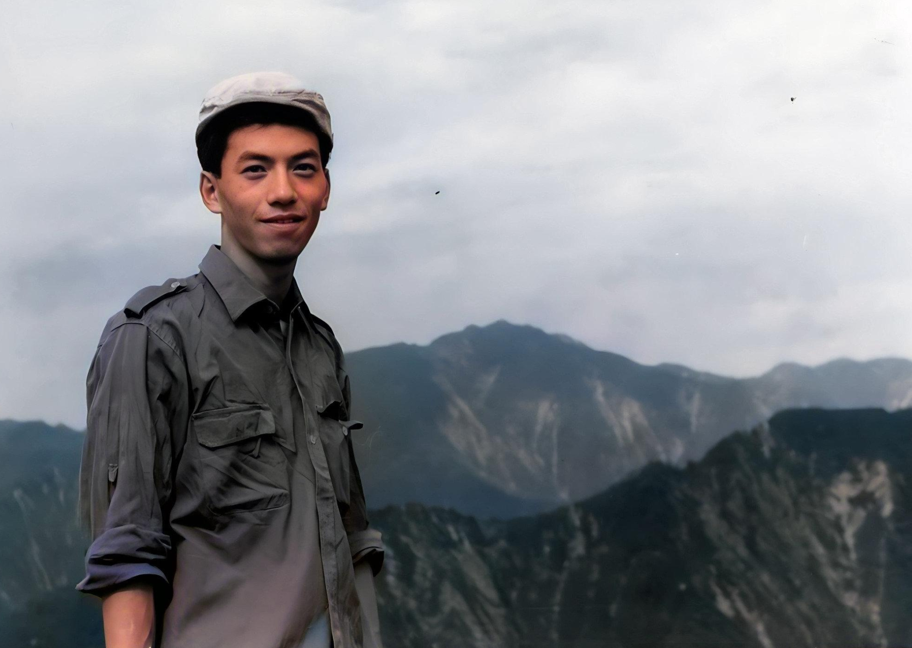
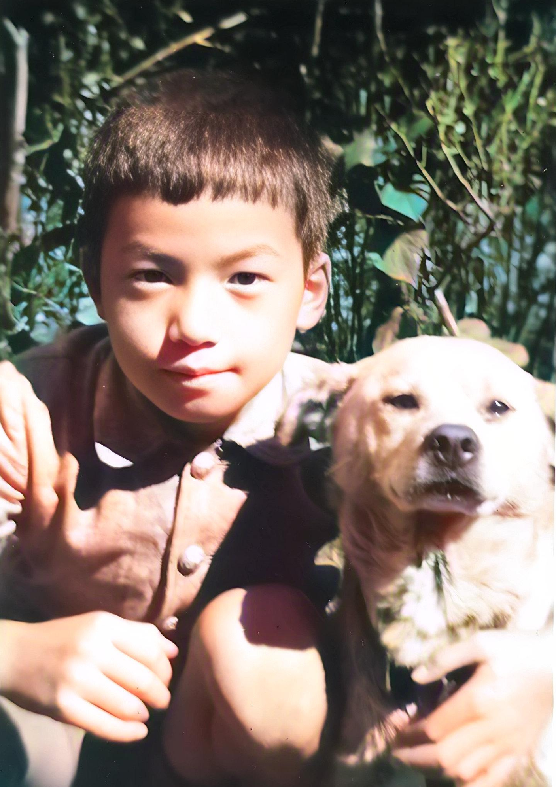
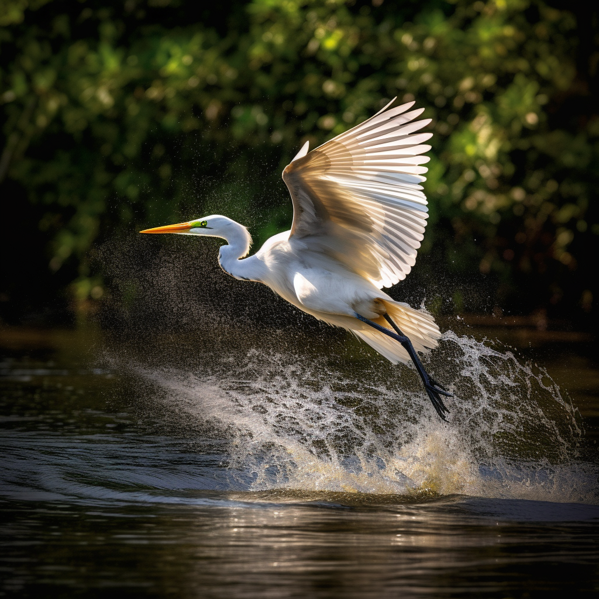
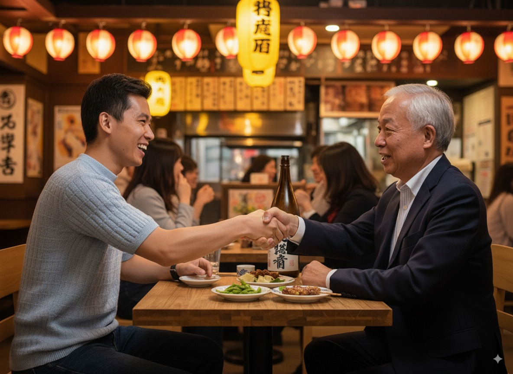
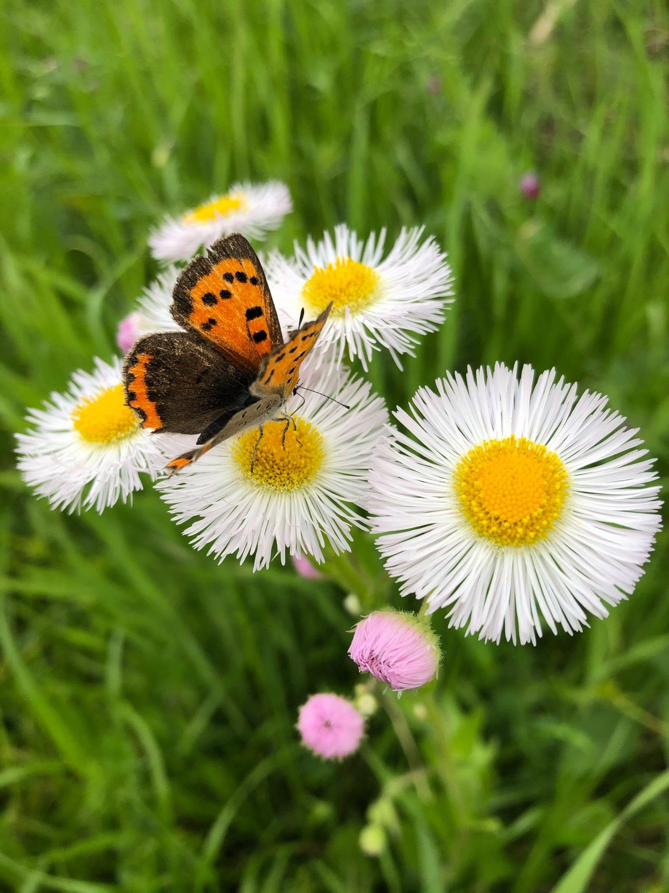
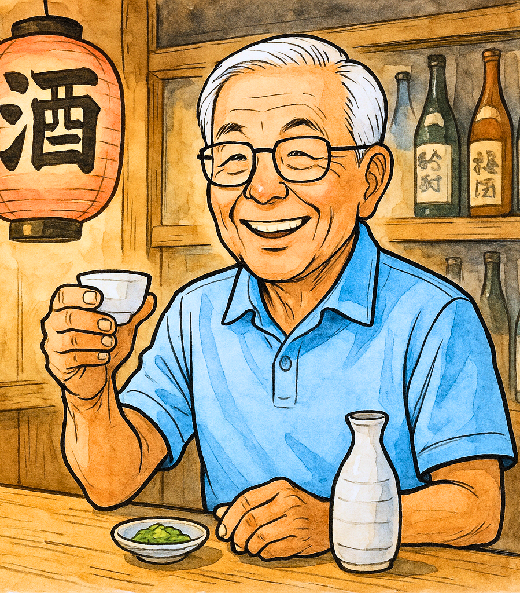

写真・画像の加工
レタッチ、合成、HDR、モノクロ表現など。各自の作品を持ち寄り、加工のテクニックや使用ソフトの情報を交換します。
IMAGE PROCESSING CLUB — EST. BY TECH VETERANS
写真・画像の加工から生成AIまで。
技術好きのシニアが集い、学び合うオンライン同好会。
ABOUT US
画像処理同好会は、主にオリンパスおよびその関連会社出身の企業OBが集まる小さな同好会です。 メンバーは60〜70歳代を中心に約15名、最高齢は80歳代。 現役時代に培った技術への好奇心を持ち寄り、写真や画像の世界を楽しんでいます。
例会のテーマは自由。写真のレタッチや画像処理の技法、PCにまつわる疑問の相談、 そして最近では生成AIの最新情報や作例の発表も増えてきました。 年齢を重ねても学ぶ楽しさは変わらない——それがこの会のモットーです。
NEXT MEETING
次回例会
計算中…
14:00 開始 ／ Zoomオンライン開催
Zoomの接続情報は会員メーリングリストでご案内します。
ACTIVITIES
レタッチ、合成、HDR、モノクロ表現など。各自の作品を持ち寄り、加工のテクニックや使用ソフトの情報を交換します。
パソコンやソフトの「困った」をみんなで解決。OSの設定からハードの選び方まで、技術系OBならではの知見が集まります。
画像生成AIやチャットAIの最新動向を共有し、作例を発表。プロンプトの工夫やツールの比較など、話題は尽きません。
BEFORE / AFTER
中央のハンドルを左右に動かすと、処理前と処理後を見比べられます。

BEFORE AFTER
BEFORE AFTERGALLERY
会員の作品・作例を展示しています。画像をクリックすると拡大表示されます。




MEMBERS' VOICE
定年後、技術から離れていましたが、ここに来て最新のAI技術に触れ、知的好奇心が刺激されています。80代の先輩がバリバリコードを書いている姿に励まされます。
画像処理は全くの初心者でしたが、皆さんが優しく教えてくれるので楽しく続けられています。例会後のZoom飲み会が毎回の楽しみです！
自宅にいながら同世代の仲間とつながれるのが良いですね。PCのトラブルもここで相談するとすぐに解決策が見つかるので助かっています。
JOIN US
写真・画像・PC・AIに興味のある方なら、どなたでも歓迎です。
「最近の技術についていきたい」「作品づくりを楽しみたい」——きっかけは何でも構いません。